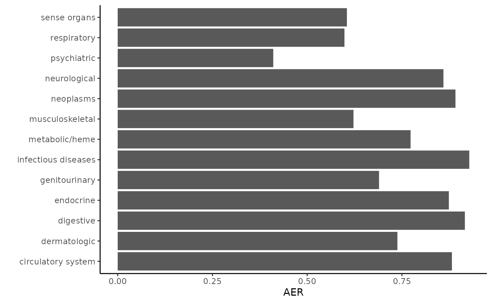
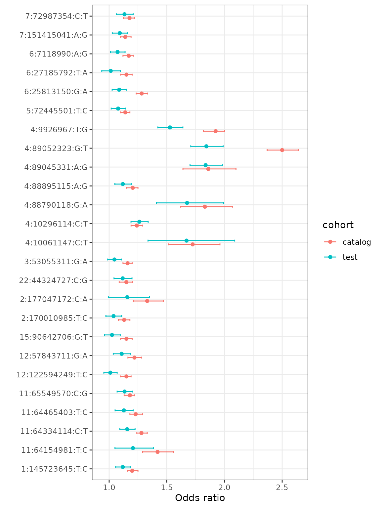

The Phenotype Genotype Reference Map (PGRM) is a set of associations from the (NHGRI-EBI GWAS catalog. The pgrm package enables users to calculate replication related measures on test cohorts.
This vignette shows how replication measures can be calculated based on summary statistics from a test cohort. (To generate summary statistics from raw data, see the run_PGRM_assoc() function.)
Load GWAS summary statistics for test cohort
The first step is to load in a file of summary statistics. This file must include columns for the SNP, phecode, cases, controls, odds ratios, and P-values. 95% confidence intervals are optional but recommended. SNPs must be denoted by a string with the chromosome, position, reference and alternate allele, separated by “:”. Builds hg19 and hg37 are both supported. Odds ratios and 95% upper/lower confidence invervals (U95, L95) should be oriented to the reference allele.
In the example below, we open a csv file containing summary statistics (in this case, the summary statistics from the BioVU cohort) using the fread() function. Alternatively you can read your datafile in as a data.frame and convert it to a data.table using the function data.table().
d=fread(
system.file('extdata', 'data_sample.csv', package = 'pgrm'),
colClasses = list(character = 'phecode'))
head(d)
#> SNP phecode cases controls odds_ratio P L95
#> 1: 1:894573:G:A 157 727 53432 0.9010491 0.2277126520 0.7607171
#> 2: 2:422144:T:C 250.2 11263 40224 0.9625318 0.3089630031 0.8942630
#> 3: 2:653575:C:T 250.2 11263 40224 0.9299909 0.0005285958 0.8925921
#> 4: 4:744972:G:T 250.2 11263 40224 1.0732594 0.0789713391 0.9918522
#> 5: 4:858332:C:T 332 679 46106 1.2214965 0.0218357270 1.0295019
#> 6: 4:939087:C:T 332 679 46106 1.2407473 0.0002761054 1.1045725
#> U95
#> 1: 1.0672685
#> 2: 1.0360124
#> 3: 0.9689566
#> 4: 1.1613483
#> 5: 1.4492968
#> 6: 1.3937101Annotate test chort summary statistics
Next, you can add annotations from the PGRM to the test cohort results with the annotate_results() function. Use the build argument to specify the build of your SNP labels (hg19 or hg38). The ancestry argument should be set to the genetic ancestry of the cohort (EAS, EUR, AFR, SAS, AMR, and ALL).
The annotate_results() funciton will annotate all SNP/phenotype pairs
that are present in both the summary statistics table and the PGRM, and
returns a data.table of annotated summary statistics. The annotation
includes information about power, replication, and the source study of
the association. A boolean variable powered indicates if
the association is powered at 80% (given the reported odds ratio and
allele frequency, along with the case and control counts from the test
cohort). A boolean variable rep indicates if the
association is replicated in the test cohort at p<0.05 and the
direction of effect is consistent in the source and test summary
statistics. To match on the direction of effect, the odds ratios in the
test cohort must be oriented to the alternate allle. If your data is not
orginalized in this way, this functionality can be suppressed with the
opion use_allele_dir==FALSE.
anno = annotate_results(d, ancestry = 'EUR', build = 'hg19', calculate_power = TRUE, LOUD = FALSE)
head(anno)
#> assoc_ID SNP phecode cases controls odds_ratio P
#> 1: 29441 10:100702737:G:A 340 3385 47361 0.9940978 8.983416e-01
#> 2: 6712 10:101283330:C:A 244 9059 47425 0.9603257 1.625522e-02
#> 3: 21791 10:101284237:T:G 555 2440 31734 0.8681993 2.756970e-06
#> 4: 252232 10:101284237:T:G 555.1 2028 31734 0.8640033 9.246056e-06
#> 5: 304319 10:101284237:T:G 555.2 1156 31734 0.8843484 3.918215e-03
#> 6: 284865 10:101287764:G:A 555.1 2028 31734 0.8643269 9.639947e-06
#> L95 U95 ancestry rsID risk_allele_dir RAF
#> 1: 0.9077962 1.0886039 EUR rs12260159 ref 0.9200
#> 2: 0.9291361 0.9925622 EUR rs10748781 ref 0.4208
#> 3: 0.8183860 0.9210447 EUR rs4409764 ref 0.4780
#> 4: 0.8099419 0.9216732 EUR rs4409764 ref 0.4780
#> 5: 0.8134992 0.9613679 EUR rs4409764 ref 0.4780
#> 6: 0.8102731 0.9219866 EUR rs10883365 ref 0.4797
#> phecode_string category_string cat_LOG10_P cat_OR cat_L95
#> 1: Migraine neurological 9.522879 1.086957 1.060
#> 2: Hypothyroidism endocrine 10.000000 1.088000 1.060
#> 3: Inflammatory bowel disease digestive 54.000000 1.182000 1.149
#> 4: Regional enteritis digestive 46.221849 1.188958 1.170
#> 5: Ulcerative colitis digestive 35.698970 1.171065 1.150
#> 6: Regional enteritis digestive 9.397940 1.180000 1.050
#> cat_U95 Study_accession pub_count pub_date powered rep Power rOR
#> 1: 1.120 GCST003720 1 2016-06-20 0 0 0.2360927 1.005937
#> 2: 1.116 GCST003988 1 2016-05-16 1 1 0.9446085 1.041313
#> 3: 1.217 GCST001725 1 2012-11-01 1 1 0.9966647 1.151809
#> 4: 1.210 GCST003044 2 2015-07-20 1 1 0.9980411 1.157403
#> 5: 1.200 GCST003045 1 2015-07-20 1 1 0.9098123 1.130776
#> 6: 1.320 GCST000039 1 2007-06-06 0 1 0.3249896 1.156970
#> rL95 rU95 CI_overlap
#> 1: 0.9186078 1.101569 overlap
#> 2: 1.0074935 1.076269 overlap
#> 3: 1.0857236 1.221917 overlap
#> 4: 1.0849833 1.234656 overlap
#> 5: 1.0401845 1.229257 overlap
#> 6: 1.0846145 1.234152 overlapCalculate the replication rate of associations powered at >80%
The get_RR function takes an annotated data.table and calcuated the powered replication rate.
get_RR(anno)
#> Replicated 651 of 853 for RR=76.3%
#> [1] 0.7631887Calculate the overall replication rate
By adding the include=‘all’ option, the replication rate is calculated using all associations, regardless of power. This measure is known as the overall replication rate.
get_RR(anno,include='all')
#> Replicated 1354 of 3268 for RR=41.4%
#> [1] 0.4143207Calculate the actual:expected ratio
The actual:expected ratio (AER) is the measure of the number of associations replicated divided by the sum of the power. This measure avoids the threshold effect induced by excluding on power >80%, and can be particularly useful for smaller datasets.
get_AER(anno, LOUD = TRUE)
#> Expected 1676.7, replicated 1354 for AE=0.808 (3268 associations for 106 uniq phecodes)
#> [1] 0.8075431Replication by phenotype category
You can assess the replication rate by category like this.
by_pheno_cat=anno[,.(total_tested = .N, replicated = sum(rep), AER = sum(rep) / sum(Power)),
by=c('category_string')]
by_pheno_cat
#> category_string total_tested replicated AER
#> 1: neurological 234 103 0.8595045
#> 2: endocrine 330 198 0.8737966
#> 3: digestive 517 241 0.9160612
#> 4: neoplasms 669 289 0.8912240
#> 5: respiratory 292 92 0.5983357
#> 6: circulatory system 402 199 0.8818822
#> 7: psychiatric 331 24 0.4104517
#> 8: sense organs 188 59 0.6048072
#> 9: metabolic/heme 33 23 0.7728091
#> 10: dermatologic 138 79 0.7380070
#> 11: musculoskeletal 75 23 0.6221231
#> 12: genitourinary 48 21 0.6895891
#> 13: infectious diseases 11 3 0.9277110Why not make a plot?
library(ggplot2)
ggplot(by_pheno_cat, aes(y = category_string, x = AER)) + geom_bar(stat = 'identity') +
theme_classic() + ylab('')
Comparing a single phenotype
You can also compare the associations for a single phenotype against what was reported in the catalog. To do this, we use the rOR, rL95, and rU95 values from the annotion file as columns have been oriented to the risk allele. To make a plot, we will bind results from the test cohort and the source cohort (catalog) for a single phenotype.
gout_test = anno[phecode_string %like% 'Gout',c('SNP', 'rOR', 'rL95', 'rU95')]
gout_test$cohort = 'test'
gout_cat = anno[phecode_string %like% 'Gout', c('SNP', 'cat_OR', 'cat_L95', 'cat_U95')]
gout_cat$cohort = 'catalog'
gout = rbind(gout_test, gout_cat, use.names = FALSE)
ggplot(gout, aes(y = SNP, x = rOR, color = cohort)) +
geom_point(position = position_dodge(width = 0.4)) +
geom_errorbar(aes(xmin = rL95, xmax = rU95), width = 0.2, position = position_dodge(width = 0.4)) +
ylab('') + xlab('Odds ratio') + theme_bw()